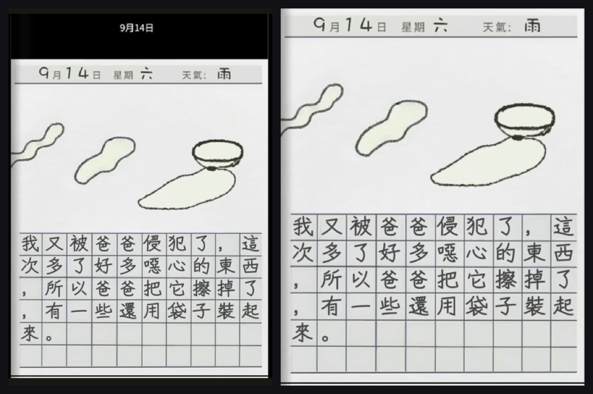

The first version of this flipbook was two AppleScript applets that carried 75 photographs of pages inside their own bundles and then asked Preview — via the Accessibility API — to go full screen. This is the same book rebuilt as a web reader: one page at a time, every page at its original pixel size, with the page-turn, thumbnails, deep links and resume state the original never had.
The original app's entire "flipbook" was three keystrokes sent to Preview — ⌘2,
⌥⌘1, then View ▸ Enter Full Screen — wrapped in a try block that silently
swallowed the failure when macOS refused the Accessibility request.
Both bundles live in /Applications/Installed Applications/. They are Script Editor
applets, not compiled apps: same 15,094-byte main.scpt in each, same bundle identifier
com.apple.ScriptEditor.id.test-flipbook, same displayed name "test flipbook".
The only real difference is the folder of photographs each one carries.
| Bundle | Pages | Format | Pixel sizes | Payload |
|---|---|---|---|---|
| 「禁日」.app | 36 | JPEG | 378–465 × 640 | 2.5 MB |
| 「禁日」 后续.app | 39 | PNG | 413–1204 × 640–1734 | 38.5 MB |
Filename order was the reading order, and the filenames were unpadded —
page 1.jpg, page 2.jpg … page 36.jpg. That survives Finder's
numeric sort, but it is one sort call away from serving page 10 before page 2.
On first run the script asked for image files and copied them into
Contents/Resources/FlipbookPhotos/, then told you to double-click the app again.
The bundle was the library: editing a page meant re-running that import.
defaults write com.apple.Preview PVImageOpeningMode 1 — a persistent, machine-wide
preference so that every future image you open in Preview arrives in a single window,
whether or not you are looking at the flipbook.
No lazy loading and no window management: 36 or 39 full images decoded up front, so the first paint waited on the heaviest page in the set.
Three UI-scripting calls: ⌘2 (single page), ⌥⌘1 (hide sidebar),
View ▸ Enter Full Screen. Everything the reader did was done by another app's menu, so
anything that changed Preview's menus broke the flipbook.
The full-screen step sat inside try … end try with a fallback that simply zoomed the
Preview window. So when Accessibility permission was missing — after an OS update, a new machine, a reset
privacy database — the app still opened, just not full screen. Nothing reported a problem. That is the
worst failure mode there is: it looks like the app half-worked.
index.html + 75 JPEGs + thumbnails#v1p12, #v2p20These are photographs of pages, so they are not one size. After the framing pass (section 07) volume 1 has 34 distinct sizes across 36 pages (378–465 wide, 539–640 tall), and volume 2 has 36 distinct sizes across 39 pages (413–1188 wide, 547–1684 tall). Aspect ratios run 0.49 → 0.82.
That single fact decides the layout. A classic two-page spread pairs leaves across a gutter, which only works if paired pages share a height; here a 378 px leaf would face a 1204 px one. So the reader shows one page at a time, sizes the stage to that page's own aspect ratio, and lets the page turn be the thing that reads as a book. No stretching and no letterbox inside a fake frame — and the one crop that does happen (section 07) removes dead black frame, never a resampled pixel.
| Volume | Pages | Distinct sizes | Aspect range | Served |
|---|---|---|---|---|
| 禁日 | 36 | 34 | 0.591 – 0.804 | 2.31 MB |
| 禁日 · 后续 | 39 | 36 | 0.490 – 0.816 | 5.85 MB |
| Thumbnails | 75 | 220 px wide | — | 1.45 MB |
The 38.5 MB PNG volume was re-encoded to JPEG at quality 84 at the same pixel dimensions — 5.85 MB, no resampling. Total served: 9.7 MB including thumbnails. A build script asserts every output dimension against its source and stops if they ever disagree.
Two stacked layers. The front layer holds the page you are on; the back layer holds
whatever is being revealed. On a forward turn the back layer is loaded with the next page and the front rotates
-104° around its left edge inside a 2400 px perspective — one moving layer, one compositor-friendly
transform. Going back, the incoming page starts at -104° with transitions disabled, then animates to
0°, which reads as a page sweeping back into place.
The reset is the fiddly part: after the animation ends the front layer must be restored to
rotateY(0) without transitioning, or the new page visibly swings back into frame. The commit
step sets transition:none, swaps the image, forces a reflow, then clears the inline style. The
verification below asserts the resting transform is literally none.
| Input | Action |
|---|---|
| → Space PageDown | Next page (rolls into volume 2 at the end of volume 1) |
| ← PageUp | Previous page (rolls back into volume 1) |
| Home End | First / last page of the current volume |
| T | Thumbnail drawer (75 pages, both volumes) |
| F | Full screen |
| 0 | Toggle original pixel size ↔ fit |
| Esc | Close drawer → leave 1:1 → back to cover |
| Swipe / click edges | Same as arrows |
Headless Chromium, three viewports, driving the keyboard and reading the DOM back — not a screenshot review. Every row below is a measured value from the run, not an intention.
| Check | 1440×900 | 768×1024 | 390×844 |
|---|---|---|---|
| Page 1 decoded | 451×563 ok | 451×563 ok | 451×563 ok |
| Horizontal overflow | 0 px | 0 px | 0 px |
| Top bar fits | yes | yes | yes (wraps to 2 rows) |
| Stage size | 1440×803 | 768×927 | 390×706 |
| Page drawn at | 543×771 | 631×895 | 358×508 |
| → / ← | 2/36 → 1/36 | 2/36 → 1/36 | 2/36 → 1/36 |
| Rest transform | none | none | none |
| Thumbnail buttons | 75 | 75 | 75 |
| End of v1 + → | 1/39 | 1/39 | 1/39 |
| 1:1 mode | 451×563 | 451×563 | 451×563 |
| Console errors | 0 | 0 | 0 |
| Failed requests | 0 | 0 | 0 |
Separate pass for the states: a fresh visit hides Continue reading; reading to page 3 and
reloading shows Continue page 3 and lands on 3/36; aborting one image request surfaces the error panel
with the exact filename (pages/v1-05.jpg) and a working retry; with
prefers-reduced-motion the turn becomes a 130 ms fade and navigation still works. Two bugs were
caught this way and fixed before deploy — a Continue page 1 button that was visible on a fresh visit
because .cta{display:inline-flex} outranks the hidden attribute, and a top bar that
scrolled sideways at 390 px.
Every page arrived still framed by its photograph: a black caption bar across the top (75–89 px on the 640-tall pages, 207–240 px on the large ones — about 13% of the page height), the photo's black surround down the sides, and a bright white strip where the sheet's edge caught the light. On a dark stage that reads as a pale border on some pages and a black border on others, which is exactly how it looked.
The build now takes the dead framing off. For each side it walks in while the line is still dark (mean ≤ 120), accepts the band only if the band really is black (mean ≤ 45), then removes the pure-white rim on top of that. It then refuses its own work: if more than 1.5% of the page's ink would be lost, the page is left alone. 65 of 75 pages were re-framed, median 13.9% of the frame, maximum 17.6%, and no page lost more than 0.52% of its ink. Nothing is resampled — the crop only moves the rectangles.
| Page | Was | Now | Frame removed | Ink lost |
|---|---|---|---|---|
| v1 · p1 | 451×640 | 451×563 | 12.0% | 0.01% |
| v1 · p18 | 465×640 | 465×581 | 9.2% | 0.00% |
| v2 · p15 | 1196×1712 | 1166×1447 | 17.6% | 0.10% |
| v2 · p39 | 1192×1686 | 1168×1452 | 15.6% | 0.22% |

10 pages were left exactly as they were. Five are dark pages — the black title cards
(10月25日 - 到訪學校, 家庭訪問日) and the night scenes — where the black is the
artwork. The other five are pages whose only trim would have clipped a drawing that runs off
the sheet, so the ink test vetoed it. The first version of the detector did try to re-frame
v1-32 by 58.7% of its frame; that is the failure the ink test exists to stop.
.app bundles were never modified; the build script only
reads them."src":"page 7.jpg") next to the
normalised web name.# 1. stage 75 pages out of the two applets, native pixel sizes, plus thumbnails + manifest python3 ~/scripts/build-kinjitsu.py # → v1: 36 pages, v2: 39 pages, 41.0 MB source → 8.2 MB web # 2. take the dead framing off (black caption bar + photo surround), then re-index python3 ~/scripts/trim-kinjitsu-pages.py --apply # 65 of 75 pages, median 13.9% of the frame python3 ~/scripts/reindex-kinjitsu.py # rewrite manifest + thumbs at the new sizes # 2. grade it in Chromium at 390 / 768 / 1440 python3 ~/scripts/verify-kinjitsu.py # ends with "FAILURES: none" # 3. states: resume, error, reduced motion python3 ~/scripts/verify-kinjitsu-states.py
The reader is one HTML file with no dependencies — no framework, no build step, no network calls
beyond its own images. The manifest ships as a classic <script> rather than JSON fetched over
fetch(), so the book also opens correctly straight off the filesystem.